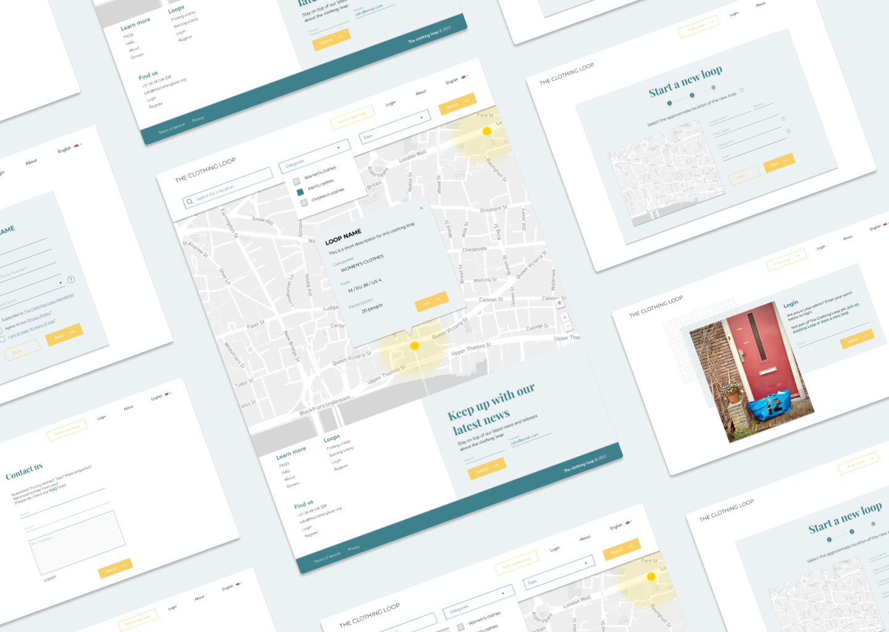
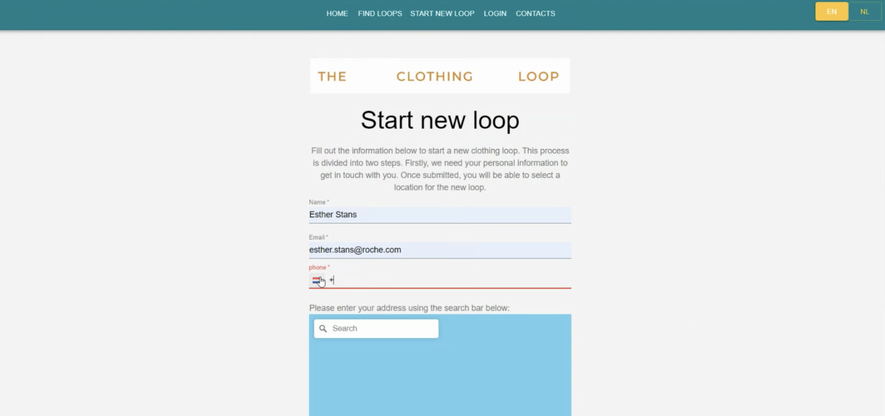
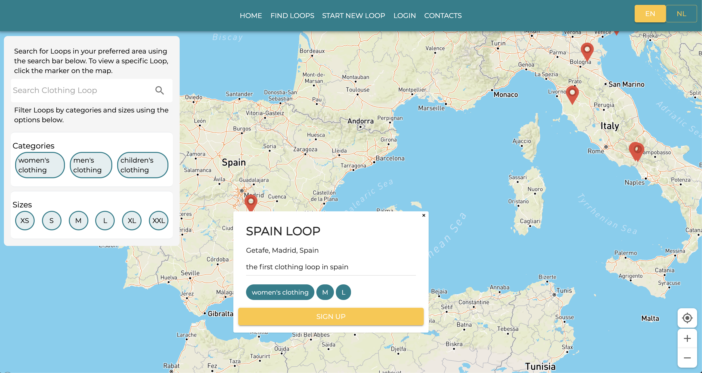

Design Thinking Process Behind a Digital Solution for the Global Expansion of a Clothing Swap Initiative

Project Overview
The Clothing Loop is a clothing swap system that allows you to share pre-loved clothes by connecting people
in local communities who share a bag of clothes.
The Clothing Loop won the What Design Can Do competition set up
by Impact Hub.
The initiative started in The Netherlands in early 2020 as a local
alternative for clothing swap events during the lockdown.
The initiative tackles the growing problem of overconsumption. It
aims to change consumers habits and reduce waste, providing a fun
and sustainable alternative to fast fashion. Currently, there are
300 actively circulating bags and over 12,000 users.
Role
UI Designer, Front-End developer & team coordinator
As part of my role as a UI designer for The Clothing Loop, I lead
the design process and production of the web application.
Alongside my contribution, I teamed up with a professional UX/UI
designer, to enrich the user-onboarding experience and automate the
initiative's global expansion.
I conducted user testing, outlined user journeys and designed
features.
Initial product
The initial phase of the platform development included a very basic
UI with the following functionalities:
Automated user signup flow

Interactive data visualization through a map view

Data management through a corresponding backoffice
Design thinking approach
The initial part involved outlining the key challenges, which I
summarized as follows:
Help users to find an existing loop in a convenient location
Help users to initiate a loop
Help volunteers to manage and securely store user data
I began structuring the design process by leading a user-centered
research with the aim of pinpointing strength and weaknesses of the
essential features. As no data was available to identify problems, I
conducted an early-stage user interview. This helped me to gather
qualitative data on features that were already built. I was able to
interview a variety of different user types - some familiar with the
initiative and others not. Early-stage user interviews, were a
fundamental step to test features and quickly reiterate over them
before globally launch the platform. Some of the most significant
insights were:
"Steps to initiate a new bag of clothes to share are not clear"
"Search and filter functionalities are not intuitive and well-designed"
"Displaying a the shared bag of clothes as a marker in the map is not
intuitive"
Redesign process: wireframes
After having reviewed all qualitative data gathered during users
interviews, I started to prioritize the features to implement. And
then moving onto the first wireframes iteration.
The first feature to be tackled was the 'new loop' sign up form,
which breaks down into two forms: 1. new user signup form, 2. form
to select the area in which a new bar circulates.
For this feature reiteration, was introduced a progress bar to track
the signup process, an interactive map in which the user can select
the approximate area in which the bag of clothes circulates and
implemented a cleaner UI.
Followed by search and filter functionalities of the map
visualization. Below, some of the wireframes of the above features
that were produced as part of the redesigning process. For this
feature reiteration, was introduced the option to search by location
which on submit sets the map's viewport to the searched location.
Also, the filters by categories and sizes was implemented by
refining size ranges and programmatically giving filter parameters
based on user selection.
The UI for these functionalities was also implemented and included
within a unique search bar, just above the map.
Next, was tackled the issue of consistently display the various
active bags of clothes on the map. Markers were replaced by blurred
circles with mutable radius values based on the user input (when
initiating a new entry). The circles represent the area in which a
bag of clothes circulates; the idea was to display an approximate
location and also let the user decide its extension.